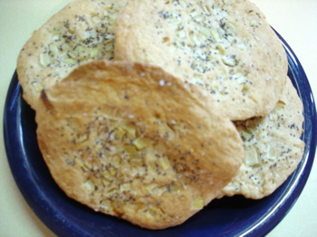

Pletzlach and pudding
The Wednesday Chef has a lot to answer for, if the intoxicating aroma in my kitchen today is anything to go by. I’m visualizing hordes of goyim across the blogosphere baking yeast-raised Jewish specialty breads, like these pletzlach, and causing Passover-observing Jews to choke on their matzoh.

Today was a good day to spend in the kitchen, once my youngest son and I got home from the dentist where he had all 4 wisdom teeth extracted. In between helping him with gauze and ice packs I mixed up the dough and put it to rise. The only change I made was substituting 1 cup of whole wheat flour for 1 cup of all purpose (my whole grains initiative, you know). Before I did that, though, I made Calvin a batch of old-fashioned butterscotch pudding from the Better Homes and Gardens cookbook that I got as a birthday present from the mother of my then boyfriend, David Neiman, when I was a senior in high school in 1971. I still turn to that cookbook for a lot of the basics.
It looks like I may finally be out from under the yoke of Easter baskets, after 27 years! After Halloween, I think Easter must be the most stressful holiday for a mother, possibly because everyone looks at you like you’re nuts and you get no emotional support like you do at Christmas. Aside from the outfits and shoes, putting the baskets together and hiding them was a nightmare that got exponentially more difficult with each passing year. Trying to hide 4 baskets at 4 different degrees of difficulty, keeping the older children from spilling the beans to the younger ones, keeping the mice from getting them (in certain bad years), all the while trying to explain to my Jewish husband that I’m not just some crazy sadist and that the kids actually enjoy it! But Calvin is saying that aside from his teeth he thinks he’s too old at 16 for a basket. Yay!
But back to the pletzlach—from the photos it looks like Luisa’s were fatter and puffier than mine, so I must have rolled mine a lot thinner and bigger. I did discover that after putting on the topping it helped to sort of push the onions into the dough with the fingers before rolling with the rolling pin; it kept the topping from scattering all over the counter. They were delicious, though, and made a great accompaniment to soup—or would have if I hadn’t over-salted the soup. I love salt, but the salty rolls and the salty soup were too much salt, even for me. (Mom, Dad would love these rolls!)
Butterscotch Pudding from The Better Homes and Gardens Cookbook, 1968 edition
- 3/4 cup brown sugar
- 2 tablespoons cornstarch
- 1/4 teaspoon salt
- 2 cups milk
- 1 well-beaten egg
- 3 tablespoons butter
- 1 teaspoon vanilla
In saucepan, blend sugar, constarch, and salt; add milk. Cook and stir over medium heat till thickened and bubbly. Cook and stir 2 minutes more. Remove from heat. Stir small amount of hot mixture into beaten egg; return to saucepan; cook and stir 2 minutes more. Remove from heat; add butter and vanilla. Pour into serving dish or individual dishes; chill. Serves 4 or 5.
Comments
I’m so glad you made these! And this: “hordes of goyim across the blogosphere baking yeast-raised Jewish specialty breads, like these pletzlach, and causing Passover-observing Jews to choke on their matzoh” made me laugh. Love it!
Add a comment